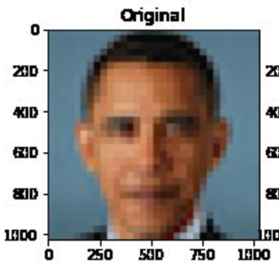

Content from Introduction
Last updated on 2024-11-14 | Edit this page
Estimated time: 30 minutes
Overview
Questions
- What do we mean by responsible machine learning?
- What types of harm may result from development and deployment of machine learning models?
- What steps are being taken to mitigate the risks of harm?
Objectives
- Understand what is meant by responsible machine learning.
- Recognise the types of harm that may be a consequence of machine learning
- Recognise the current state of oversight and regulation of machine learning
Responsible machine learning
Like many technologies, machine learning has the potential to cause harm if applied inappropriately. With machine learning the issues can be subtle: a seemingly good model may in fact be anything but. As an emerging technology, machine learning is largely self-regulated so awareness of potential pitfalls is especially important.
In this lesson we look broadly at a number of topics that are important for applying machine learning in a responsible manner. We do not attempt to define “responsible machine learning”, but we cover topics that a person who practices machine learning should be aware of. Topics range from choosing appropriate tasks, to awareness of sources of bias, to the susceptibility of models to manipulation.
Given that “Artificial Intelligence” (or “A.I.”) has largely become a synonym for machine learning, especially in popular culture, we will use these terms interchangeably.
Potential harm
What are some examples of machine learning systems that are already in active public use? What kinds of harm could result from the application of machine learning systems? Should we be concerned or are these risks overhyped?
In their guide to Understanding artificial intelligence ethics and safety The Turing Institute highlight examples of the kind of harm that may result from application of machine learning system.
Exercise
Take a look at the table on pages 5-6 of the Turing Report. What categories of harm are highlighted?
- Bias and Discrimination
- Denial of Individual Autonomy, Recourse, and Rights
- Non-transparent, Unexplainable, or Unjustifiable Outcomes
- Invasions of Privacy
- Isolation and Disintegration of Social Connection
- Unreliable, Unsafe, or Poor-Quality Outcomes
Need for oversight
In recent years there have been important changes that have sought to introduce scrutiny and safeguards to the development and application of machine learning. A 2018 statement by scientists at the Association for Computing Machinery (ACM), for example, highlighted growing concerns around lack of oversight:
“There clearly is a massive gap between the real-world impacts of computing research and the positivity with which we in the computing community tend to view our work. We believe that this gap represents a serious and embarrassing intellectual lapse. The scale of this lapse is truly tremendous: it is analogous to the medical community only writing about the benefits of a given treatment and completely ignoring the side effects, no matter how serious they are.”
Exercise
Take a few moments to read the ACM statement.
- What are some of the negative impacts of research reported in the
article?
- What “small change” do the authors suggest could have a big impact?
Points include: Disruption of careers; Generated audio and video might threaten democracy; Decline in privacy rights; Spread of false information, conspiracy theories, and propaganda.
“Peer reviewers should require that papers and proposals rigorously consider all reasonable broader impacts, both positive and negative.” Where projects were likely to have a net negative impact, the statement suggests that authors “be encouraged to discuss complementary technologies, policy, or other interventions that could mitigate the negative broader impacts”.
Impact statements
In 2020, for the first time the call for papers for the Conference and Workshop on Neural Information Processing Systems (NeurIPS), one of the largest machine learning conferences, introduced a requirement for authors to reflect on potential positive and negative consequences of their work with a statement on “broader impact”:
In order to provide a balanced perspective, authors are required to include a statement of the potential broader impact of their work, including its ethical aspects and future societal consequences. Authors should take care to discuss both positive and negative outcomes.
While questions remain about the effectiveness of this policy change, it demonstrates growing recognition of the importance of responsible machine learning and it is a step towards the research oversight that many believe is needed. An analysis of the statements that were submitted to the 2020 conference found that the broader impact statements raised concerns in several areas:
Exercise
Take a look at Section 5.1.2 of the analysis on Types of Impacts (beginning page 5).
What are some of the concerns that were raised in the impact statements?
Concerns raised in the impact statements included:
- Privacy: impact around personal data and surveillance.
- Labor: impact on employment and productivity.
- Environment: impact on the environment, including the carbon footprint of training models.
- Media: impact in the media, particularly around fake news and misinformation.
- Bias: impact in terms of fairness and discrimination.
- Reliability: impact of models that failed to meet expectations.
- Interpretability: impact of the opaqueness of models and the “black box problem”.
Regulation
The European Commission meanwhile is developing a regulatory framework with the goal of mitigating the risks of “artificial intelligence” across Europe and beyond. The proposed regulation follows a risk-based approach, differentiating between uses of artificial intelligence that create (i) an unacceptable risk, (ii) a high risk, and (iii) low or minimal risk.
Systems that are deemed to have “unacceptable risk” - such as “social scoring by governments” and “toys using voice assistance that encourages dangerous behaviour” - would be banned. “High risk” systems - such as artificial intelligence assisted surgery - would be tightly regulated. The high-risk systems would, for example, be required to be trained on “high quality” datasets; to keep a log of their activity; and to be subject to human oversight.
Key Points
- There is potential for machine learning models to cause harm.
- Researchers are increasingly required to reflect on the impact of their work.
- Regulation and oversight are in their infancy.
Content from Tasks
Last updated on 2024-11-14 | Edit this page
Estimated time: 30 minutes
Overview
Questions
- Which tasks are appropriate for machine learning?
- What are the principles of ethical machine learning?
Objectives
- Become familiar with principles for ethical research.
- Consider whether tasks are appropriate for machine learning.
Tackling the right tasks
Machine learning is a rapidly advancing, powerful technology that is helping to drive innovation. Before embarking on a machine learning project, we need to consider the task carefully. Many machine learning efforts are not solving problems that need to be solved. Worse, many applications of machine learning are not for the public good.
The NIH Guiding Principles for Ethical Research provide a useful set of considerations for any project.
Exercise
Take a look at the NIH Guiding Principles for Ethical Research.
What are the main principles?
A summary of the principles is listed below:
- Social and clinical value: Does the social or clinical value of developing and implementing the model outweigh the risk and burden of the people involved?
- Scientific validity: Once created, will the model provide valid, meaningful outputs?
- Fair subject selection: Are the people who contribute and benefit from the model selected fairly, and not through vulnerability, privilege, or other unrelated factors?
- Favorable risk-benefit ratio: Do the potential benefits of of developing and implementing the model outweigh the risks?
- Independent review: Has the project been reviewed by someone independent of the project, and has an Institutional Review Board (IRB) been approached where appropriate?
- Informed consent: Are participants whose data contributes to development and implementation of the model, as well as downstream recipients of the model, kept informed?
- Respect for potential and enrolled subjects: Is the privacy of participants respected and are steps taken to continuously monitor the effect of the model on downstream participants?
What kind of tasks should we be trying to tackle? How much should we worry about technology being misused several years down the line? The answers are not always clear. Here we explore some cases that have raised concerns relating to discrimination, misinformation, and privacy.
Identifying genetic disorders
In 2019, Nature Medicine published a paper that described work to develop a model that could identify genetic disorders from a photograph of a patient’s face. The abstract of the paper is copied below:
Syndromic genetic conditions, in aggregate, affect 8% of the population. Many syndromes have recognizable facial features that are highly informative to clinical geneticists. Recent studies show that facial analysis technologies measured up to the capabilities of expert clinicians in syndrome identification. However, these technologies identified only a few disease phenotypes, limiting their role in clinical settings, where hundreds of diagnoses must be considered. Here we present a facial image analysis framework, DeepGestalt, using computer vision and deep-learning algorithms, that quantifies similarities to hundreds of syndromes.
DeepGestalt outperformed clinicians in three initial experiments, two with the goal of distinguishing subjects with a target syndrome from other syndromes, and one of separating different genetic sub-types in Noonan syndrome. On the final experiment reflecting a real clinical setting problem, DeepGestalt achieved 91% top-10 accuracy in identifying the correct syndrome on 502 different images. The model was trained on a dataset of over 17,000 images representing more than 200 syndromes, curated through a community-driven phenotyping platform. DeepGestalt potentially adds considerable value to phenotypic evaluations in clinical genetics, genetic testing, research and precision medicine.
- What is the proposed value of the algorithm?
- What are the potential risks?
- Are you supportive of this kind of research?
This technology underpins a phone app called Face2Gene, which is able to report on genetic conditions at the snap of a person’s face. Media reports on the technology generally favourably, for example reporting on the excitement of clinicians at this technology:
In a room full of clinical geneticists, he projected many faces of people who had been diagnosed with varying dysmorphic diseases and asked the physicians to assign a genetic disorder to each face. Suffice it to say, the physicians performed poorly—far worse than the computer…One of the most exciting aspects of the program … is its ease. After asking just one question to a patient, “is it ok if I take a picture?” and snapping a quick photo, the program offers results back within seconds.
“Reading” a person’s face
There is a long history of physiognomy, the “science” of trying to read someone’s character from their face. With the advent of machine learning, this discredited area of research has made a comeback. There have been numerous studies attempting to guess characteristics such as trustworthness, criminality, and political and sexual orientation.
In 2018, for example, researchers suggested that neural networks could be used to detect sexual orientation from facial images. The abstract is copied below:
We show that faces contain much more information about sexual orientation than can be perceived and interpreted by the human brain. We used deep neural networks to extract features from 35,326 facial images. These features were entered into a logistic regression aimed at classifying sexual orientation. Given a single facial image, a classifier could correctly distinguish between gay and heterosexual men in 81% of cases, and in 74% of cases for women. Human judges achieved much lower accuracy: 61% for men and 54% for women. The accuracy of the algorithm increased to 91% and 83%, respectively, given five facial images per person.
Facial features employed by the classifier included both fixed (e.g., nose shape) and transient facial features (e.g., grooming style). Consistent with the prenatal hormone theory of sexual orientation, gay men and women tended to have gender-atypical facial morphology, expression, and grooming styles. Prediction models aimed at gender alone allowed for detecting gay males with 57% accuracy and gay females with 58% accuracy. Those findings advance our understanding of the origins of sexual orientation and the limits of human perception. Additionally, given that companies and governments are increasingly using computer vision algorithms to detect people’s intimate traits, our findings expose a threat to the privacy and safety of gay men and women.
- What is the proposed value of the algorithm?
- What are the potential risks?
- Are you supportive of this kind of research?
A response from GLAAD, a leading LGBTQ media advocacy organization described the work as dangerous and flawed. Meanwhile an article in Scientific American notes that:
This is precisely the kind of “scientific” claim that can motivate repressive governments to apply AI algorithms to images of their citizens. And what is it to stop them from “reading” intelligence, political orientation and criminal inclinations from these images?
Key Points
- Not all applications of machine learning are for the public good.
Content from Data
Last updated on 2024-11-14 | Edit this page
Estimated time: 30 minutes
Overview
Questions
- How does data influence machine learning?
- How can we better document data?
Objectives
- Recognise how data influences machine learning models.
- Learn an approach for structured documention of data characteristics.
Data as a foundation
Data is crucial for the field of machine learning and it forms the foundation for the models that we build and use. When data is made available to the machine learning community, it has the ability to drive progress and shape the direction of research.
Lack of available data, meanwhile, stifles and stalls progress. Despite the importance of data, its creation and sharing has often been relegated to footnotes in machine learning studies, seen as secondary to the work of model building and application.
The data landscape
To enable the creation of more powerful machine learning models, there have been increasing efforts to create larger and larger datasets to train the models. In many cases, little thought has seemingly gone into the creation of these datasets.
In Data and its (dis)contents: A survey of dataset development and use in machine learning research, Paullada et al survey the research literature to explore how data has influenced the field of machine learning. Broadly, topics discussed include:
- Issues of representation, such as “glaring under-representation of darker skinned subjects … within prominent facial analysis datasets”
- Propensity of models to make performance gains on datasets through “cheap tricks” that do not extrapolate well to out-of-distribution data.
- Risks of datasets in legitimizing problematic goals, such as the prediction of sexual preferences using social media photographs.
- Failure to recognize human annotation work as interpretive work that encodes subjective values and judgments, resulting in a conflation of “gold labels” with ground truth.
- Management and distribution of data, especially as it relates to privacy and risk of exploitation.
A 2021 study by Birhane and colleagues explored the LAION dataset, a huge dataset scraped from the internet that is often used as a source for training large language and imaging models.
Machine learning during the pandemic
When COVID-19 hit Europe in 2020, machine learning researchers around the world turned their focus to building predictive models to help beat the pandemic. Despite these efforts, an inquiry by The Turing Institute concluded none of the models made a real difference, and some were potentially harmful.
Exercise
Look at this report published in the MIT Technology Review that summarises the findings of the Turing Institute.
- What were some of the causes of failure, according to the article in
the MIT Technology Review? (“What went wrong?”).
- What solutions are suggested in the article? (“How to fix it?”).
- Poor quality data. “Many unwittingly used a data set that contained chest scans of children who did not have covid as their examples of what non-covid cases looked like. But as a result, the AIs learned to identify kids, not covid.”
“Driggs’s group trained its own model using a data set that contained a mix of scans taken when patients were lying down and standing up. Because patients scanned while lying down were more likely to be seriously ill, the AI learned wrongly to predict serious covid risk from a person’s position.”
“In yet other cases, some AIs were found to be picking up on the text font that certain hospitals used to label the scans. As a result, fonts from hospitals with more serious caseloads became predictors of covid risk.”
“A more subtle problem Driggs highlights is incorporation bias, or bias introduced at the point a data set is labeled. For example, many medical scans were labeled according to whether the radiologists who created them said they showed covid. But that embeds, or incorporates, any biases of that particular doctor into the ground truth of a data set.”
- “Researchers also need to share their models and disclose how they were trained so that others can test them and build on them.”Those are two things we could do today,” he says. “And they would solve maybe 50% of the issues that we identified.”
“If all these people making new models instead tested models that were already available, maybe we’d have something that could really help in the clinic by now.”
Data documentation
Given the fundamental role of data in machine learning, there have been calls for data sharers to provide better documention for the downstream consumers.
The Conference on Neural Information Processing Systems, for example, introduced a Dataset Track for the first time in 2021 to encourage reporting “on highly valuable machine learning datasets and benchmarks” … and to create a forum to discuss “how to improve dataset development”.
In Datasheets for Datasets, Gebru et al call for data creators to provide “datasheets” to accompany the datasets that they share. The datasheets serve dual purposes: for the creator they encourage reflection on the data creation and distribution process, and for the consumer they offer details necessary to make informed decisions about using a dataset
“We propose that every dataset be accompanied with a datasheet that documents its motivation, composition, collection process, recommended uses, and so on. Datasheets for datasets have the potential to increase transparency and accountability within the machine learning community, mitigate unwanted societal biases in machine learning models, facilitate greater reproducibility of machine learning results, and help researchers and practitioners to select more appropriate datasets for their chosen tasks
Exercise
Look at Appendix A of Datasheets for Datasets.
What sections are included in the example datasheet? What do these sections seek to capture?
- Motivation
- Composition
- Collection Process
- Preprocessing/cleaning/labeling
- Uses
- Distribution
- Maintenance
Key Points
- Data is fundamental to the field of machine learning.
- Datasheets can help us to reflect on the process of data creation and distribution.
Content from Fairness
Last updated on 2024-11-14 | Edit this page
Estimated time: 30 minutes
Overview
Questions
- What do we mean by fairness and bias?
- What are some examples of biased models?
Objectives
- Consider sources of bias in data.
- Recognise examples of bias in language models.
- Recognise examples of bias in image models.
Bias and fairness
We live in a world full of bias. Opportunities such as education and healthcare are not evenly distributed: access is largely a matter of luck and a reflection of our circumstances of birth. Given the uneven, biased world we live in, it is hardly surprising that the machine learning models that we build are highly susceptible to exhibiting favoritism and prejudice.
Bias is a systematic preference or prejudice against a particular group, individual, or feature. A well-cited definition of fairness is “the absence of any prejudice or favoritism towards an individual or a group based on their inherent or acquired characteristics”.
Machine learning models are increasingly used in ways that directly affect people’s lives, so it is crucially important that we strive for fairness to prevent harmful discrimination.
Strategies to achieve fairness often focus on attempting to eliminate bias in training data (for example, by collecting more representative datasets) or by making algorithmic adjustments (for example, by weighting underrepresented classes more heavily). This remains an active research area, wth no simple solutions.
Photo upsampling
Biases are often most obvious in imaging models. In their paper on “PULSE: Self-Supervised Photo Upsampling via Latent Space Exploration of Generative Models”, Menon and colleagues describe the application of a machine learning algorithm for upsampling images.
The paper demonstrates how a blurry, low resolution image can be transformed into a “sharp, realistic, high-resolution image”. Soon after publication, apparent biases were shared widely on social media.
Question
- Who is shown in this blurred picture? 
- While the picture is of Barack Obama, the upsampled image shows a
white face.

Menon and colleagues subsequently updated their paper to discuss this issue of bias. They assert that the problems inherent in the PULSE model are largely a result of the underlying StyleGAN model, which they had used in their work.
Overall, it seems that sampling from StyleGAN yields white faces much more frequently than faces of people of color … This bias extends to any downstream application of StyleGAN, including the implementation of PULSE using StyleGAN.
…
Results indicate a racial bias among the generated pictures, with close to three-fourths (72.6%) of the pictures representing White people. Asian (13.8%) and Black (10.1%) are considerably less frequent, while Indians represent only a minor fraction of the pictures (3.4%).
You can try the model here.
Language models
Natural Language Processing (NLP) is an area of machine learning focused on the analysis of text. NLP has numerous practical applications, including voice recognition, foreign-language translation, and even AI pair programming.
In recent years, some of the major advances in NLP have been in the evolution of models that allow tokens (words, characters) in text sequences to be predicted from their context. Two such models include Bidirectional Encoder Representations from Transformers (BERT) and Generative Pre-trained Transformer (GPT).
These language models are built upon “word embeddings”, which are representations of words in a multi-dimensional space. The models implement a concept popularized by linguist John Firth that “a word is characterized by the company it keeps”.
When the models are trained on biased data - which they inevitably are - the models become amplifiers of often harmful sterotypes. This issue, and a proposed approach to their mitigation, are discussed by Bolukbasi et al in Man is to Computer Programmer as Woman is to Homemaker? Debiasing Word Embeddings.
The blind application of machine learning runs the risk of amplifying biases present in data. Such a danger is facing us with word embedding, a popular framework to represent text data as vectors which has been used in many machine learning and natural language processing tasks. We show that even word embeddings trained on Google News articles exhibit female/male gender stereotypes to a disturbing extent.
…
given an analogy puzzle, “man is to king as woman is to x” (denoted as man:king :: woman:x), simple arithmetic of the embedding vectors finds that x=queen is the best answer because:
\[ \overrightarrow{man} - \overrightarrow{woman} \approx \overrightarrow{king} − \overrightarrow{queen} \]
…
… the same system that solved the above reasonable analogies will offensively answer “man is to computer programmer as woman is to x” with x=homemaker. Similarly, it outputs that a father is to a doctor as a mother is to a nurse.
Stochastic parrots
In their high-profile paper On the Dangers of Stochastic Parrots: Can Language Models Be Too Big?, Bender and colleagues ask: “What are the possible risks associated with [language model] technology and what paths are available for mitigating those risks?”.
The last couple of paragraphs of the conclusion are copied below:
Work on synthetic human behavior is a bright line in ethical AI development, where downstream effects need to be understood and modeled in order to block foreseeable harm to society and different social groups. Thus what is also needed is scholarship on the benefits, harms, and risks of mimicking humans and thoughtful design of target tasks grounded in use cases sufficiently concrete to allow collaborative design with affected communities.
Question
- Why is the word “parrot” used to describe the language models?
- On a surface level modern language models can give the appearance of possessing human-like intelligence, for example, by holding conversations or by creating poems. In reality, the models are simply mimicking the language and biases of humans.
Key Points
- Biases in data lead to biased models.
- All current models are likely to exhibit some form of bias.
- Achieving fairness is an increasingly active area of research.
Content from Dataset shift
Last updated on 2024-11-14 | Edit this page
Estimated time: 30 minutes
Overview
Questions
- What is dataset shift?
- What are examples of dataset shift?
- What are the implications of dataset shift?
Objectives
- Recognise causes of dataset shift.
- Understand the potential outcomes of dataset shift.
Dataset shift
Machine learning models often face major challenges when applied in real-life settings. The tightly-controlled conditions under which models are trained are often very different to conditions “in the wild”. Dataset shift is a term that is used to describe the nature of changing data conditions in the context of machine learning.
In their paper on The Clinician and Dataset Shift in Artificial Intelligence, Finlayson et al explore different causes of dataset shift within hospitals, suggesting policies for recognising these changes as well as strategies for mitigation.
While the article itself is paywalled, there is an openly available summary of the key points raised in the article. The authors suggest that dataset shift occurs in a clinical setting as a result of three broad categories of change: Changes in Technology; Changes in Population and Setting; and Changes in Behavior.
Changes in technology
The International Classification of Diseases (ICD) system is a globally used set of disease codes maintained by the World Health Organisation (WHO), revised periodically. When revisions are introducted, this can affect the clinical prediction models that are built upon them.
For example, study that examined insurance claims for >18 million adults and children in the US from 2010 to 2017 found that the transition from ICD-9 to ICD-11 led to instantaneous increases or decreases of 20% or more in the prevalence of many diagnostic categories.
Finlayson and colleagues suggest that fixing such an issue might require mapping of concepts, or even retraining of models. Referring to the Finlayson paper, what is is another example of a technology change that might lead to dataset shift, and how might it be addressed?
Changes in population and setting
In The Parable of Google Flu: Traps in Big Data Analysis Lazer and colleagues discuss Google Flu Trends, a product developed to predict U.S. flu burden:
The initial version of GFT was a particularly problematic marriage of big and small data. Essentially, the methodology was to find the best matches among 50 million search terms to fit 1152 data points. The odds of finding search terms that match the propensity of the flu but are structurally unrelated, and so do not predict the future, were quite high. GFT developers, in fact, report weeding out seasonal search terms unrelated to the flu but strongly correlated to the CDC data, such as those regarding high school basketball. This should have been a warning that the big data were overfitting the small number of cases — a standard concern in data analysis. This ad hoc method of throwing out peculiar search terms failed when GFT completely missed the nonseasonal 2009 influenza A–H1N1 pandemic. In short, the initial version of GFT was part flu detector, part winter detector.
Looking again a the Finlayson paper, what is another example of a change in population or setting that could affect the performance of a model? How might the effects of this change be mitigated?
Changes in behaviour
Laboratory tests are often important predictors in clinical models. Research has found that in many cases the timing of laboratory tests is as important, or more important, than the results of the tests themselves:
The presence of a laboratory test order, regardless of any other information about the test result, has a significant association (P<0.001) with the odds of survival in 233 of 272 (86%) tests. Data about the timing of when laboratory tests were ordered were more accurate than the test results in predicting survival in 118 of 174 tests (68%).
Minor changes in clinical practice - for example, a change in the routine of ordering a particular laboratory test - may therefore have unintended side-effects in terms of the performance of machine learning models trainined on laboratory data.
Key Points
- Dataset shift can result from changes in technology, population, and behaviour.
- Dataset shift can lead to deterioration of models after deployment.
- Dataset shift is a major issue in terms of deployment of machine learning models.
Content from Explainability
Last updated on 2024-11-14 | Edit this page
Estimated time: 30 minutes
Overview
Questions
- “What is explainability?”
- “Is explainability necessary?”
Objectives
- “Understand the concepts of explainability and interpretability.”
- “Understand how saliency maps can help us to explain a model.”
Interpretability and explainability
“Interpretable” and “explainable” are terms that are often used interchangeably to describe the characteristic of a machine learning model to be understood. In recent literature, however, interpretable is perhaps more often used to refer to models with limited complexity and predictable behaviour. For example, a decision tree may be inherently interpretable:
If we can look at our model and predict what will happen to our prediction if input values change, then we can say that the model is interpretable. Often, however, data and models are too complex and high-dimensional to be easily understood. They cannot be explained by a simple relationship between inputs and outputs.
For these complex models there is typically a focus on attempting to dissect the model’s decision making procedure. This insights lead us to explainability: our ability to gaze into a complex model and explain its behaviour.
The necessity of interpretability and explainability
If a model is making a prediction, many of us would like to know how the decision was reached. With this understanding, we gain trust. Doshi-Velez and Kim suggest that interpretablity (/explainablity) can assist in ascertaining presence of desired features such as fairness, privacy, reliability, robustness, causality, usability and trust:
- Fairness: that groups are not discriminated against.
- Privacy: that sensitive information is not revealed.
- Reliability and robustness: that models reach certain levels of performance despite parameter or input variation.
- Causality: that predicted changes in output due to a perturbation will occur as expected.
- Usability: that methods provide information that assist users to accomplish a task.
In machine learning in health, it has been argued that explainable AI is necessary to gain trust with the health-care workforce, provide transparency into decision making processes, and to mitigate bias. As a counterpoint, Ghassemi and colleagues argue that urrent explainability methods are unlikely to achieve these goals for patient-level decision support.
Instead, they advocate for “rigorous internal and external validation of AI models as a more direct means of achieving the goals often associated with explainability”, and “caution against having explainability be a requirement for clinically deployed models”.
Saliency maps
Saliency maps - and related approaches - are popular form of explainability for imaging models. Saliency maps use color to illustrate the extent to which a region of an image contributes to a given decision. For example, when building neural network models to predict lung conditions (pleural effusion) we can see the model pays particular attention to certain areas of an image.

While saliency maps may be useful, they are also known to be problematic in many cases. Displaying a region of importance leaves us to decide what the explanation might be. The human tendency is to assume that the feature we would find important is the one that was used (this is an example of a famously harmful cognitive error called confirmation bias).
This problem is well summarised by computer scientist Cynthia Rudin: “You could have many explanations for what a complex model is doing. Do you just pick the one you ‘want’ to be correct? The ability of localisation methods to mislead human users is compellingly demonstrated by Adebayo and colleagues, who show that even untrained networks can produce saliency maps that appear reassuring.
Explainability of machine learning models
The requirement for explainability is even making its way into legal governance. The European Union General Data Protection (GDPR)) for example, states that “[the data subject should have] the right … to obtain an explanation of the decision reached”.
If our doctor or nurse recommends paracetamol (acetaminophen) for pain management, most of us would accept the suggestion without question. This is despite the action of paracetamol at a molecular level being unclear. Are we holding machine learning models to a higher standard than humans?
Key Points
- “The importance of explainability is a matter of debate.”
- “Saliency maps highlight regions of data that most strongly contributed to a decision.”
Content from Attacks
Last updated on 2024-11-14 | Edit this page
Estimated time: 30 minutes
Overview
Questions
- How can models be intentionally mislead?
Objectives
- Understand the concept of adversarial attacks.
Manipulation of models
It is important to be aware that models are susceptible to manipulation by targeted attacks. A model is susceptible to attack if it can be manipulated to produce an unexpected output. Currently most examples of models being mislead are theoretical - and often humourous - but this is likely to change as the stakes increase. These examples also demonstrate the fragility of models. It is not difficult to see how an algorithm-led system could reach an incorrect decision simply due to an unusual event.
Adversarial attacks
One common method for attack is to alter input data to intentionally cause misclassification. Researchers at Google, for example, demonstrated that they could generate a sticker that could trick a machine learning model into confusing a picture of a banana with a toaster.

While the “adversarial patch” requires significant effort to fool the algorithm, researchers at OpenAI discovered that their image classification model could be fooled by nothing more than a pen and paper. They announced that a model that they had developed for classifying images would “respond to the same concept whether presented literally, symbolically, or conceptually. As a result, they demonstrated some surprising results in the application of the model.


Key Points
- Models are susceptible to manipulation.